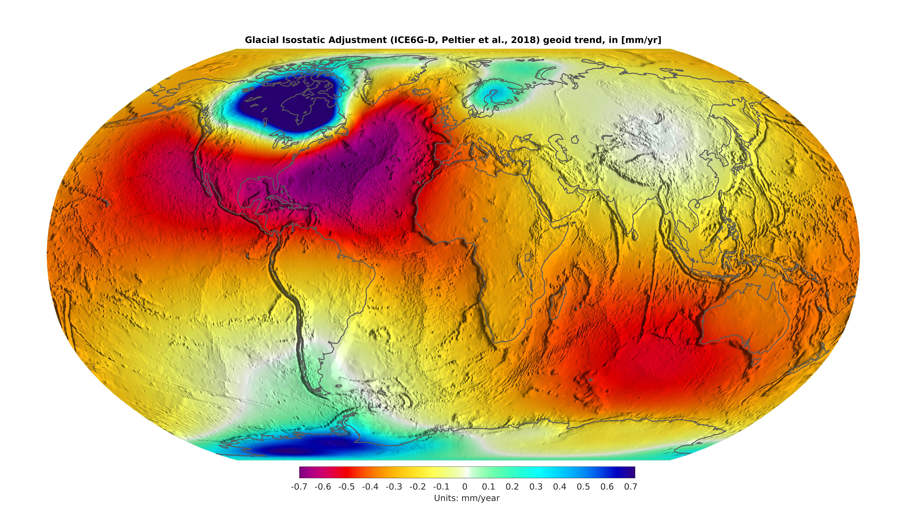
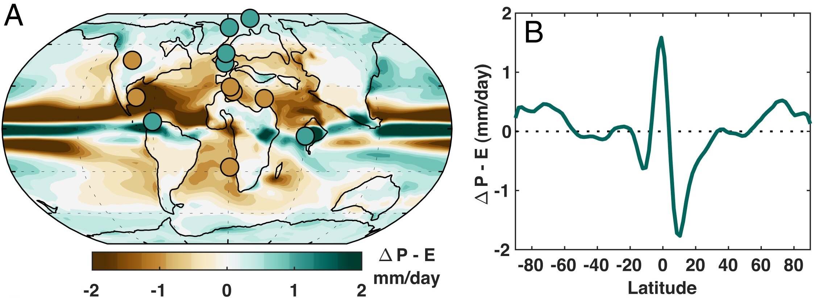
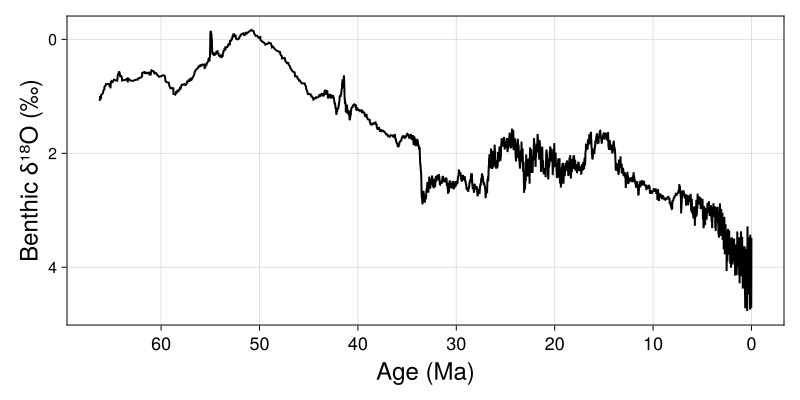
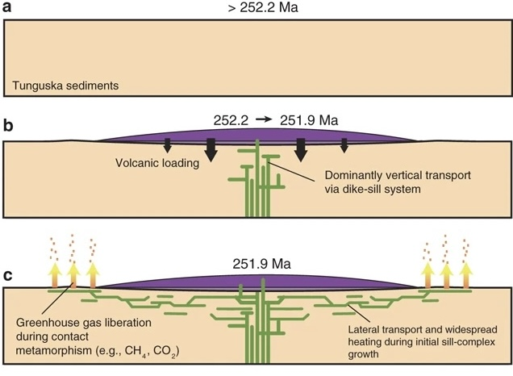
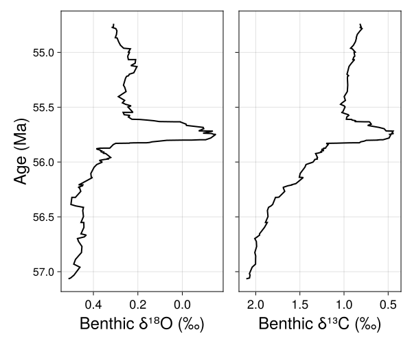
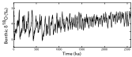

Environmental responses to climate
Week
GEOS 3410
🪑
Week Schedule
Tuesday
- Last glacial: Dansgaard, Oeschger, Heinrich, Oh my!
- Deglaciation: the last termination
Thursday
- Environments during…
- Glaciation/Deglaciation
- Hothouse climates
- Final presentation
Outside of class
- Skim week reading (syllabus)
- Climate zine proposal: Wednesday [20 Nov]
- Term paper: Friday [22 Nov]
Final assessment
No notes,Term paper reminders
- Due Friday
- Diagram feedbacks as figures.
- Include references at end of paper.
- Refer to assignment for formatting!
Ice house environments
Glacial sea levels

Deglaciation
Based on: Dyke+ 2004
Glacial Isostatic Adjustment
Eustatic sea level

Biomes
LGM

Modern

Climate — biome relationships

LGM Biomes
Modern Biomes
Hot house environments
Paleocene → Eocene Warming (PETM)
∼6°C of warming
Vegetation shifts into the Eocene
Forest Ecosystems
| ▪ ▪ ▪ | Tropical → subtropical |
| ▪ ▪ | Temperate (cooler →) |
No taiga!
Paleocene → Eocene: Warming in a warm climate
Imperfect analog for modern climate change
(Extreme) End-Permian Perspective
Cool, glacial early Permian climates

Siberian Traps: large flood basalt volcanism


Organic-rich Tunguska sediments →CO2
Organic-rich Tunguska sediments →CO2
Widespread warming and ocean hypoxia at Permo-Triassic boundary

End-Permian Extinction

- Benthic hypoxia due to low O2 solubility and weak ocean circulation
- Extinctions most extreme in ocean and esp. benthic ocean
- Higher survivorship on land and in shallow marine environments
- Life in tropics most resilient
Modern atmospheric CO2 ≈ 425 ppm
Mid-Miocene Earth

{kind=link}
{kind=link}
{kind=link}
{kind=link}
{kind=link}
{kind=link}
.png){kind=link}
- No persistent N. Hemisphere ice
- ↓ Antarctic ice
- Similar environments to modern, but we lack details
- Topic of intense research
- How will we get to this state?
Cenozoic Context
A state of disequilibrium

Final Presentations
Content Requirements
… final presentation that summarizes your term paper.
…learn as a community from our shared knowledge and gain a multifaceted perspective of the climate crisis and how we might face it.
- Articulates an issue connected to anthropogenic climate change
- Contextualizes the issue within physical Earth system processes
- Examines the broader impact/importance/relevance of the issue
- Identifies solutions grounded in both adaptation and mitigation
Schedule
Mandatory Attendance
| Part I | Sect. 1/2 | class time | Tuesday, 9 Dec. |
|---|---|---|---|
| Part II | Sect. 1 | 8:30–11:10 am | Friday, 13 Dec. |
| Part II | Sect. 2 | 8:30–11:10 am | Monday, 16 Dec. |
Please arrive on time to BOTH sessions
You may arrive up to 15 minutes early during the Finals week sessions.
I will bring beverages and snacks!
I will bring beverages and snacks!
Structure
| Presentation | 6–7 minutes |
| Questions | 3–4 minutes |
| Total speaker time | 10 minutes |
|---|---|
| Change over | 2 minutes |
Talks arranged by theme, announced shortly after break.
8 am Tuesday Dec. 10
Submit slide deck by email / G Drive
[Google Slides, Powerpoint, PDF]
Graham's Presentation Recommendations*


*Requirements
A healthy balance of text and images
- 1–2 legible visuals that support your story
- Neatly arranged text that supplements images
- Appropriate references for info/text (Edwards et al. 2024) and visuals in left OR right corner

Data: Zachos et al. 2001
Data: Zachos et al. 2001
Use images (etc…) at adequate resolution
Yes

No
Unsure? Reach out to me!
(Also be wary of super high-res images that crash presentations)
Text on slides
Too little
- Heinrich events
- IRD
Sweet spot
- Ice-rafted detritus in North Atlantic sediments
- Occur only during stadials
- Pacific teleconnections
Too much
- Ice-rafted detritus (IRD) in North Atlantic sediments.
- Predominantly carbonate-rich clasts form Hudson Strait Ice Stream (HSIS)
- Occur only during stadials, but not every stadial.
- Driven by climate/ocean forcing, but probably a modulating role from internal ice sheet processes.
- Hulu speleothem record, Siku events (North Pacific IRD)
Questions
Do I know the answer to the question?
YES
Answer the question accurately, confidently, clearly.
NO
Acknowledge uncertainty. Then, share the relevant information you do know and offer a defensible guess / hypothesis / prediction
Slide deck structure
Title slide
Presentation Title
Your name
(minimum)
Content
Topic
Images and media
4–10 slides
Conclusions
Conclusions
2–3 main points
Rubric
| Content | 15 |
|---|---|
| Questions | 3 |
| Presentation | 5 |
| Organization | 5 |
| Construction | 5 |
| Total | 30 |
Next (next) Week ()
- Enjoy the break!
- Modern & future climate
- Climate zine [6 Dec]